失败发生在哪里？
qwen3.5:4b · test · 相同视角、每段 12 帧的离线回顾对照
点击输入面板里的任一小图，在对应完整视频中检查证据。面板文件保留模型实际看到的原始字节；公开视频只为审阅压缩。面板标记实测时间，播放器按原视频帧位置定位。
这是离线失败检测与起点定位实验，使用整段录制信息；不代表在线预警或机器人控制能力。
冻结协议 · 全部指标与逐样本结果 · 样本索引全分母结果
| 方法 | 准确率 | 失败召回 | 成功误报 | Hit@1s | Hit@2s | Hit@5s | 条件 MAE | 有效定位覆盖 | 弃权率 |
|---|---|---|---|---|---|---|---|---|---|
| 均匀抽帧 | 50.0% | 100.0% | 100.0% | 0.0% | 0.0% | 25.0% | 13.60s | 100.0% | 0.0% |
| 状态事件抽帧 | 56.2% | 100.0% | 87.5% | 0.0% | 12.5% | 25.0% | 11.79s | 100.0% | 0.0% |
| 全判失败 · 时钟中点 | 50.0% | 100.0% | 100.0% | 12.5% | 12.5% | 12.5% | 13.56s | 100.0% | 0.0% |
| 全判失败 · 状态峰值 | 50.0% | 100.0% | 100.0% | 12.5% | 12.5% | 25.0% | 19.53s | 100.0% | 0.0% |
状态事件相对均匀抽帧的 Hit@2s 差值：+12.5 个百分点；任务簇配对区间 [+0.0, +37.5] 个百分点。小样本区间仅作描述。
Hit 分母是全部真实失败，包括漏检与弃权。MAE 只针对已检出且时间有效的失败，必须与覆盖率一起看。两个控制不读取标签，均默认全判失败；不能把失败召回单独解释为能力。采样器最近帧覆盖仅反映时间分辨率，详见原始指标。
逐段证据
01 · stack_cup_pyramid失败 · 作者起点 49.52s
Use the right arm to separate the six nested upside-down paper cups and stack them into a 3-2-1 pyramid structure. Success condition: All six cups are correctly stacked in the pyramid structure.
aloha · ft-4edb1758fef95be05a90 · 66.72s · cam_low
均匀抽帧 failure · 36.36s
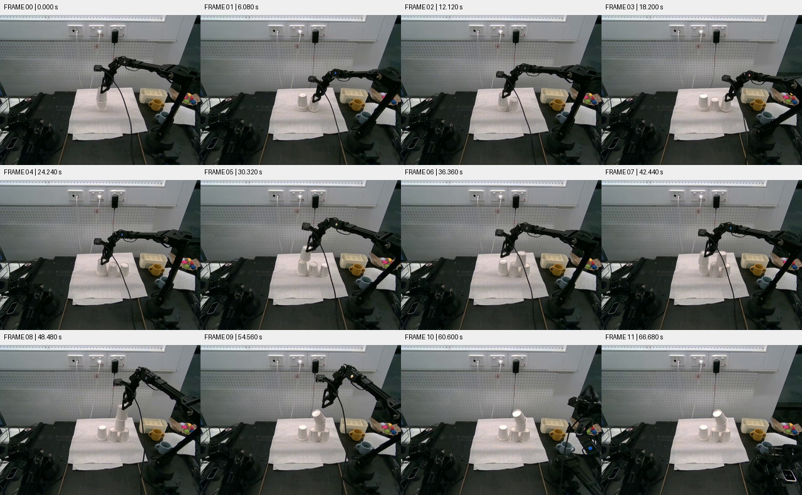
The robot drops a cup from the stack, breaking the pyramid structure.
原始响应与时间记录查看未经改写的输出
{
"decision": "failure_at_frame_06",
"reason": "The robot drops a cup from the stack, breaking the pyramid structure."
}状态事件抽帧 failure · 19.48s
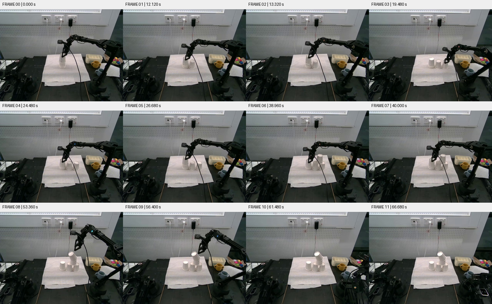
The robot has dropped a cup from the stack, breaking the pyramid structure.
原始响应与时间记录查看未经改写的输出
{
"decision": "failure_at_frame_03",
"reason": "The robot has dropped a cup from the stack, breaking the pyramid structure."
}02 · stack_cup_pyramid成功
Use the right arm to separate the six nested upside-down paper cups and stack them into a 3-2-1 pyramid structure. Success condition: All six cups are correctly stacked in the pyramid structure.
aloha · ft-84ada7aa65b6de9c311f · 110.20s · cam_low
均匀抽帧 failure · 40.04s
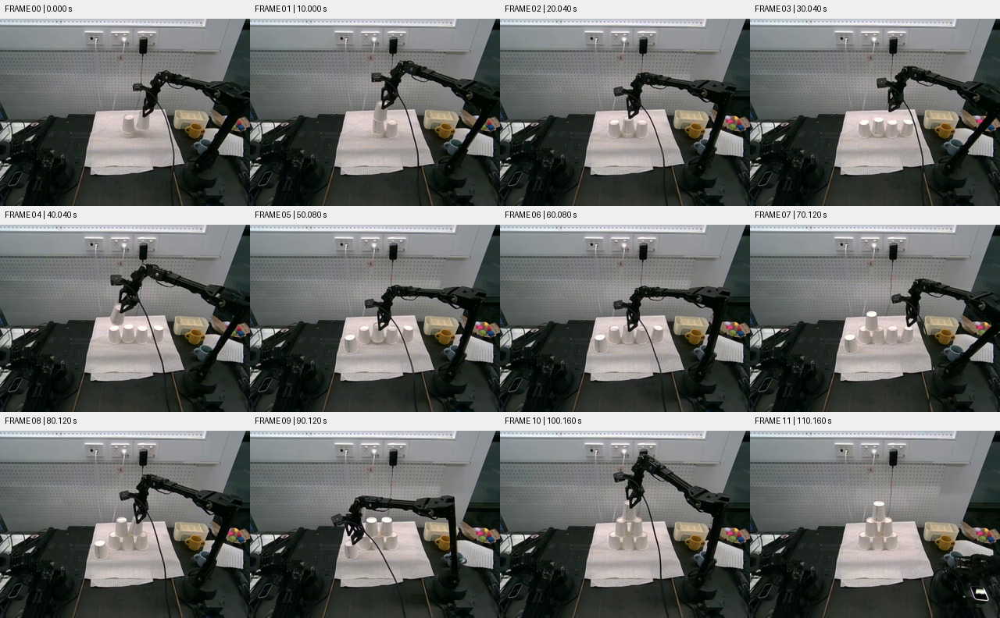
The robot drops a cup from the pyramid structure onto the table.
原始响应与时间记录查看未经改写的输出
{
"decision": "failure_at_frame_04",
"reason": "The robot drops a cup from the pyramid structure onto the table."
}状态事件抽帧 success · —
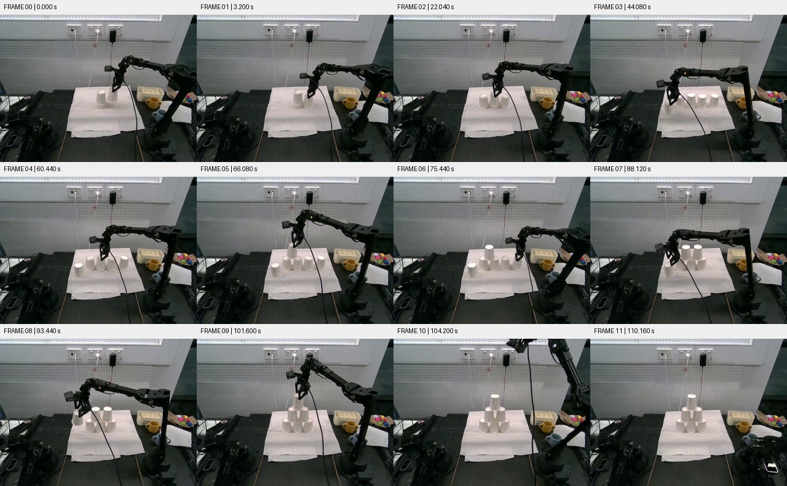
Final frames show all six cups correctly stacked in a 3-2-1 pyramid.
原始响应与时间记录查看未经改写的输出
{
"decision": "success",
"reason": "Final frames show all six cups correctly stacked in a 3-2-1 pyramid."
}03 · balls_to_rack失败 · 作者起点 29.21s
Place all six balls into the six slots egg carton: use the right arm to place every ball lying to the right of the carton, then use the left arm to place the balls lying on its left. Success condition: The right-side balls are all placed before the left arm starts, and all six balls end up seated one per slot in the six slots egg carton, with no ball left on the table.
so101 · ft-6ccabedb3368519904df · 72.17s · head
均匀抽帧 failure · 26.23s
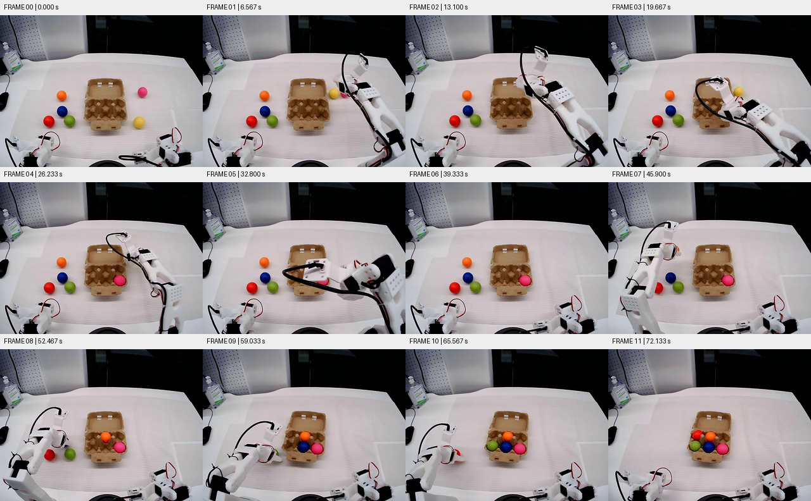
Right arm drops a ball outside the carton in frame 04, violating placement instructions.
原始响应与时间记录查看未经改写的输出
{
"decision": "failure_at_frame_04",
"reason": "Right arm drops a ball outside the carton in frame 04, violating placement instructions."
}状态事件抽帧 failure · 57.70s
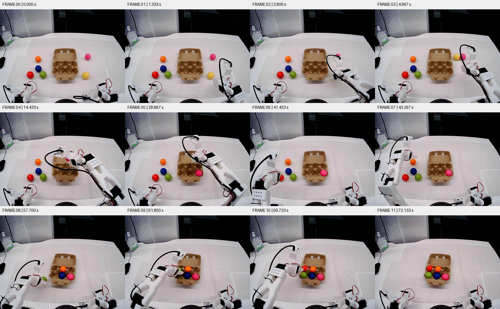
The right arm drops a ball into the carton at frame 08, but the left-side balls remain on the table.
原始响应与时间记录查看未经改写的输出
{
"decision": "failure_at_frame_08",
"reason": "The right arm drops a ball into the carton at frame 08, but the left-side balls remain on the table."
}04 · balls_to_rack成功
Place all six balls into the six slots egg carton: use the right arm to place every ball lying to the right of the carton, then use the left arm to place the balls lying on its left. Success condition: The right-side balls are all placed before the left arm starts, and all six balls end up seated one per slot in the six slots egg carton, with no ball left on the table.
so101 · ft-d7cb03d63f4eda8ad1a2 · 60.73s · head
均匀抽帧 failure · 22.07s
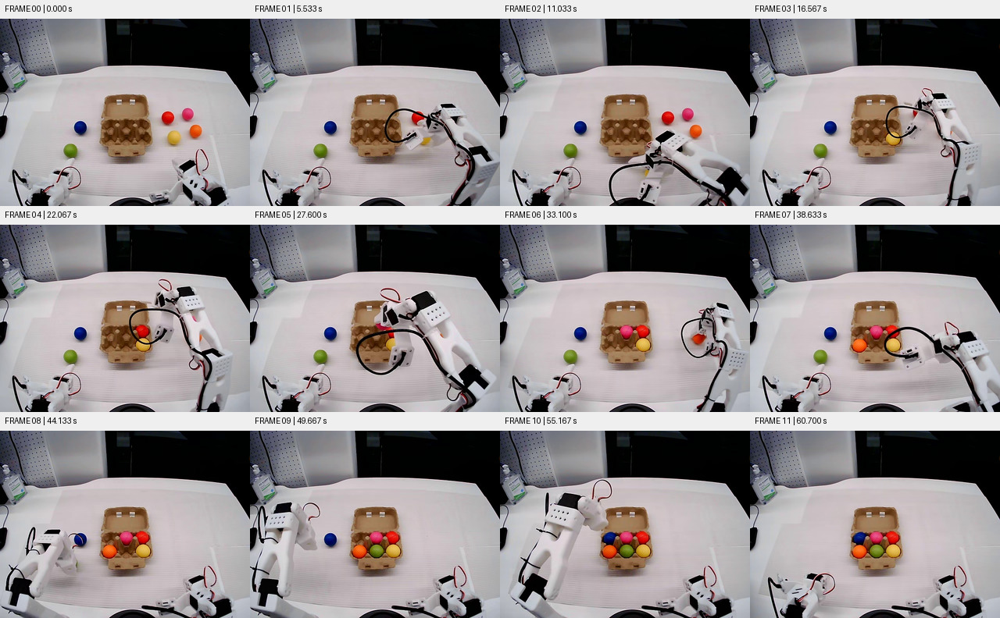
Right arm drops a ball outside the carton in frame 04, violating placement instructions.
原始响应与时间记录查看未经改写的输出
{
"decision": "failure_at_frame_04",
"reason": "Right arm drops a ball outside the carton in frame 04, violating placement instructions."
}状态事件抽帧 failure · 24.27s
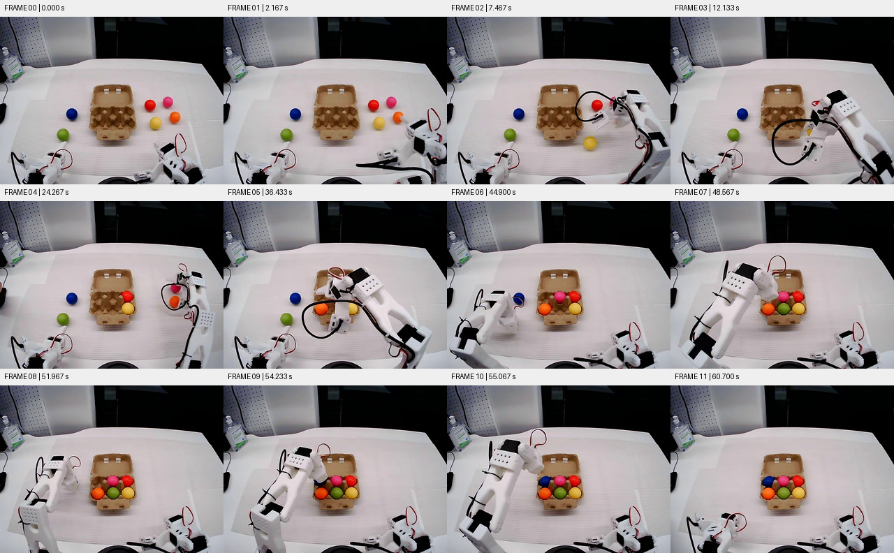
Right arm drops a ball outside the carton instead of placing it inside.
原始响应与时间记录查看未经改写的输出
{
"decision": "failure_at_frame_04",
"reason": "Right arm drops a ball outside the carton instead of placing it inside."
}05 · stabilize_and_insert_block失败 · 作者起点 12.70s
Use the left arm to contact and stabilize the green block, then use the right arm to assemble the small block into its rightmost slot. Success condition: All actions completed in order, the small block is inserted into the rightmost slot.
aloha · ft-9bb4c38bd41608e4ec06 · 26.68s · cam_low
均匀抽帧 failure · 9.68s
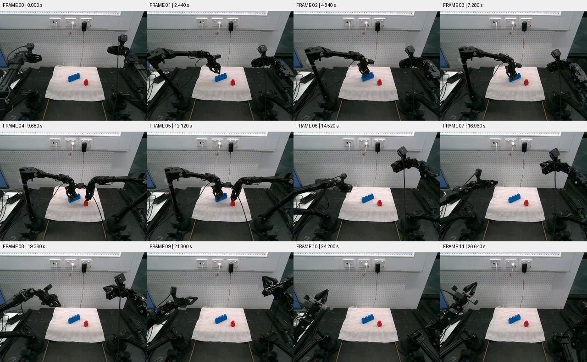
Left arm contacts the blue block instead of the green one, violating the task's first step.
原始响应与时间记录查看未经改写的输出
{
"decision": "failure_at_frame_04",
"reason": "Left arm contacts the blue block instead of the green one, violating the task's first step."
}状态事件抽帧 failure · 7.52s
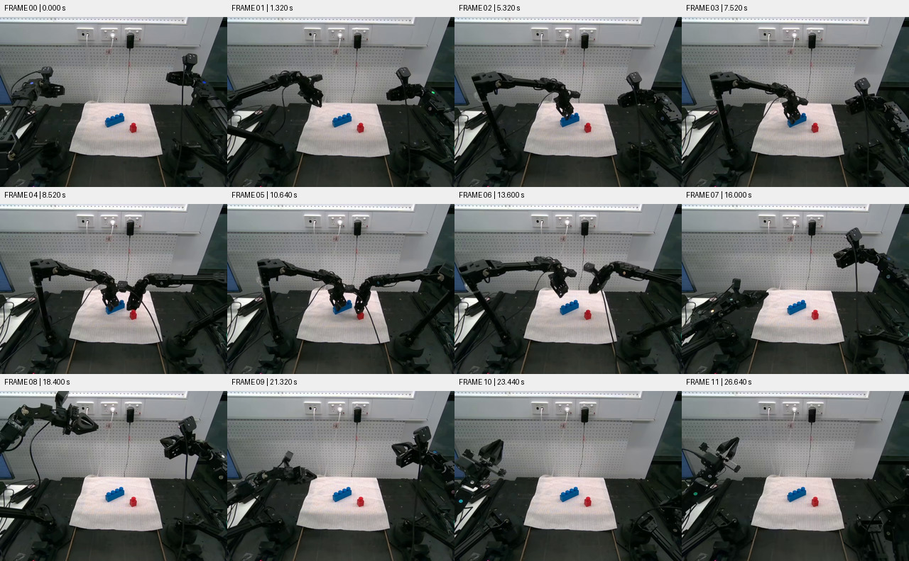
The robot grasps the blue block instead of the green one, violating the task instructions.
原始响应与时间记录查看未经改写的输出
{
"decision": "failure_at_frame_03",
"reason": "The robot grasps the blue block instead of the green one, violating the task instructions."
}06 · stabilize_and_insert_block成功
Use the left arm to contact and stabilize the green block, then use the right arm to assemble the small block into its rightmost slot. Success condition: All actions completed in order, the small block is inserted into the rightmost slot.
aloha · ft-80c6b359887bc5edcb98 · 38.16s · cam_low
均匀抽帧 failure · 20.80s
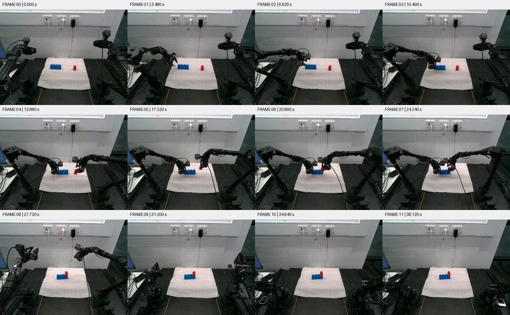
The left arm is holding the blue block instead of the green one.
原始响应与时间记录查看未经改写的输出
{
"decision": "failure_at_frame_06",
"reason": "The left arm is holding the blue block instead of the green one."
}状态事件抽帧 failure · 15.24s
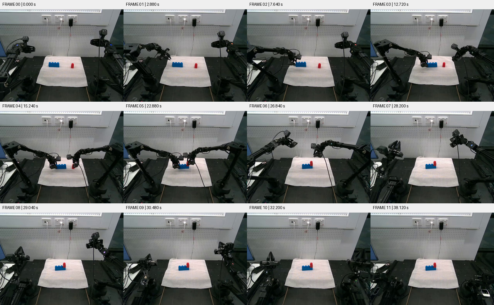
The left arm is holding the blue block instead of the green one.
原始响应与时间记录查看未经改写的输出
{
"decision": "failure_at_frame_04",
"reason": "The left arm is holding the blue block instead of the green one."
}07 · handover失败 · 作者起点 49.32s
Hand the three items across the central partition: the arm on the item side picks up each object and passes it to the other arm in mid-air above the partition, and the receiving arm places it into the container on its own side. Success condition: All three items are passed arm-to-arm across the partition and end up in the container.
so101 · ft-8d79cdaa2a510939da3c · 54.80s · head
均匀抽帧 failure · 39.83s
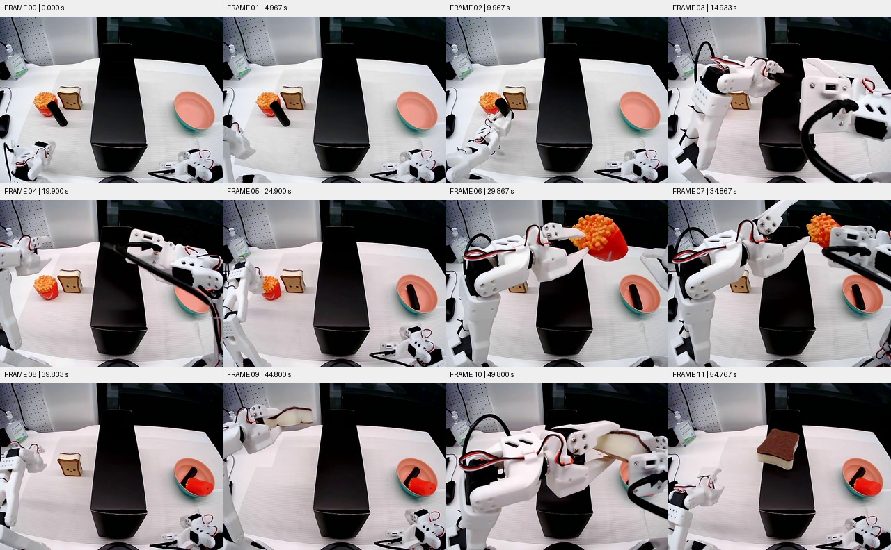
The robot drops the first item (fries) onto the table instead of passing it to the other arm.
原始响应与时间记录查看未经改写的输出
{
"decision": "failure_at_frame_08",
"reason": "The robot drops the first item (fries) onto the table instead of passing it to the other arm."
}状态事件抽帧 failure · 42.33s
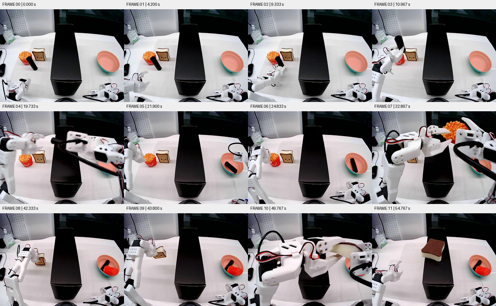
The robot drops the first item (orange cup) onto the table instead of passing it to the other arm.
原始响应与时间记录查看未经改写的输出
{
"decision": "failure_at_frame_08",
"reason": "The robot drops the first item (orange cup) onto the table instead of passing it to the other arm."
}08 · handover成功
Hand the three items across the central partition: the arm on the item side picks up each object and passes it to the other arm in mid-air above the partition, and the receiving arm places it into the container on its own side. Success condition: All three items are passed arm-to-arm across the partition and end up in the container.
so101 · ft-11e9a595eea861175a88 · 40.53s · head
均匀抽帧 failure · 11.03s
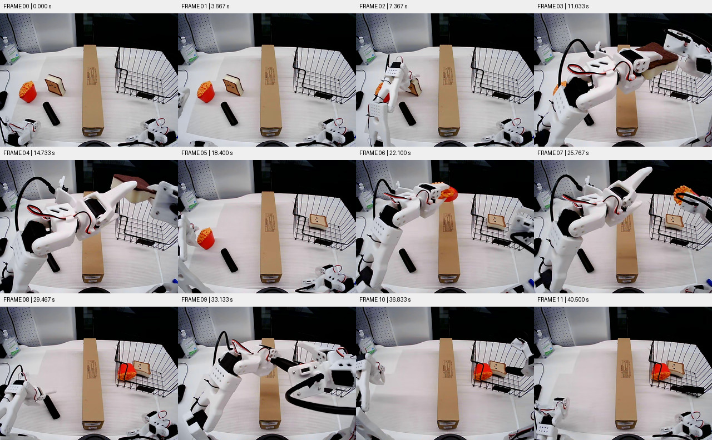
The passer arm drops the first item (orange cup) onto the table instead of passing it to the receiver arm.
原始响应与时间记录查看未经改写的输出
{
"decision": "failure_at_frame_03",
"reason": "The passer arm drops the first item (orange cup) onto the table instead of passing it to the receiver arm."
}状态事件抽帧 failure · 26.90s
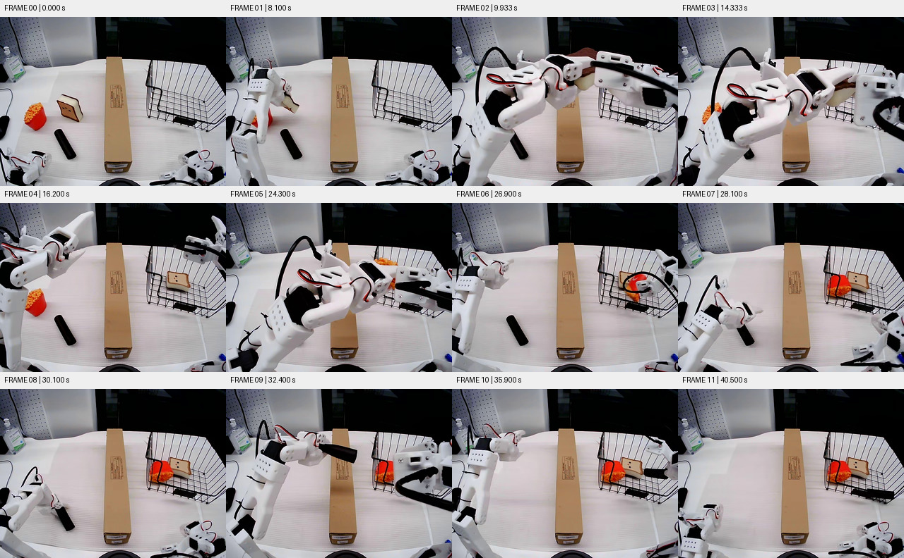
The robot drops the orange item on the table instead of passing it to the other arm.
原始响应与时间记录查看未经改写的输出
{
"decision": "failure_at_frame_06",
"reason": "The robot drops the orange item on the table instead of passing it to the other arm."
}09 · cube_stack失败 · 作者起点 35.06s
Stack all the cubes into one tower: Use the right arm to pick up the five scattered cubes one at a time and place each on top of the growing stack; the left arm stays parked. Success condition: All actions completed in order, and all five cubes are stacked into a single free-standing tower with no cube left lying on the table.
so101 · ft-b29a409043e540ac0617 · 38.60s · head
均匀抽帧 failure · 24.53s
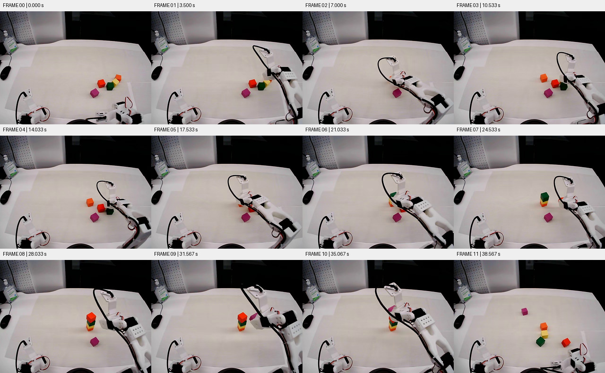
The robot drops a cube onto the table instead of stacking it.
原始响应与时间记录查看未经改写的输出
{
"decision": "failure_at_frame_07",
"reason": "The robot drops a cube onto the table instead of stacking it."
}状态事件抽帧 failure · 30.87s
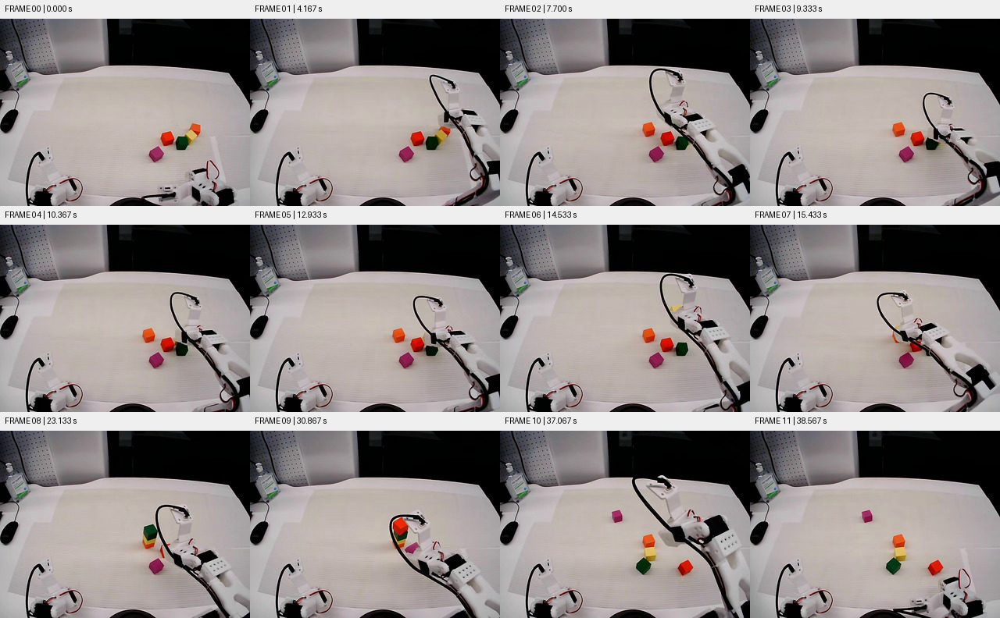
The robot drops a cube onto the table instead of stacking it.
原始响应与时间记录查看未经改写的输出
{
"decision": "failure_at_frame_09",
"reason": "The robot drops a cube onto the table instead of stacking it."
}10 · cube_stack成功
Stack all the cubes into one tower: Use the right arm to pick up the five scattered cubes one at a time and place each on top of the growing stack; the left arm stays parked. Success condition: All actions completed in order, and all five cubes are stacked into a single free-standing tower with no cube left lying on the table.
so101 · ft-3e827a40be5f87ad0454 · 49.67s · head
均匀抽帧 failure · 31.60s
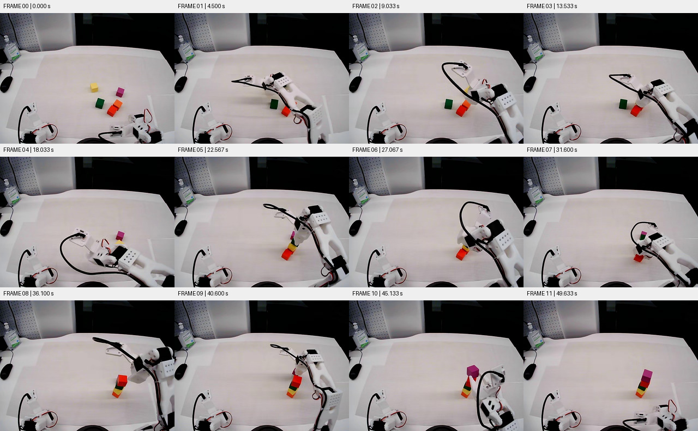
The robot drops the cube from the stack onto the table instead of placing it on top.
原始响应与时间记录查看未经改写的输出
{
"decision": "failure_at_frame_07",
"reason": "The robot drops the cube from the stack onto the table instead of placing it on top."
}状态事件抽帧 failure · 29.77s
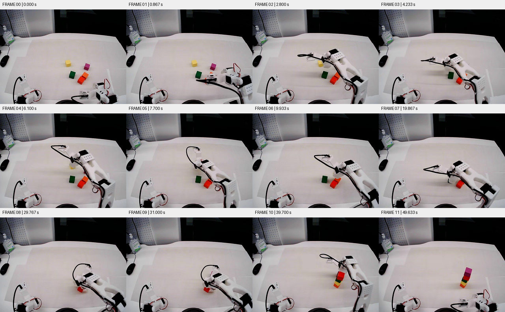
The robot drops the red cube onto the table instead of stacking it.
原始响应与时间记录查看未经改写的输出
{
"decision": "failure_at_frame_08",
"reason": "The robot drops the red cube onto the table instead of stacking it."
}11 · yellow_red_blocks_to_bowls失败 · 作者起点 3.86s
Use the right arm to place the yellow block into the yellow bowl on the left, then use the left arm to place the red block into the orange ball on the right. Success condition: All actions completed in order, and the yellow block is inside the yellow bowl and the red block is inside the orange ball.
aloha · ft-6b8ee21faa882822ddcb · 22.04s · cam_low
均匀抽帧 failure · 10.00s
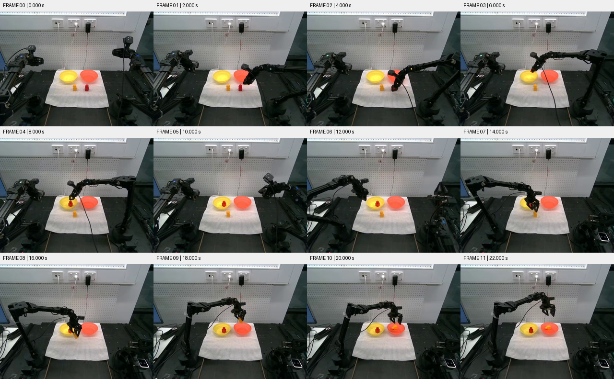
The yellow block is dropped on the table instead of being placed in the yellow bowl.
原始响应与时间记录查看未经改写的输出
{
"decision": "failure_at_frame_05",
"reason": "The yellow block is dropped on the table instead of being placed in the yellow bowl."
}状态事件抽帧 failure · 14.76s
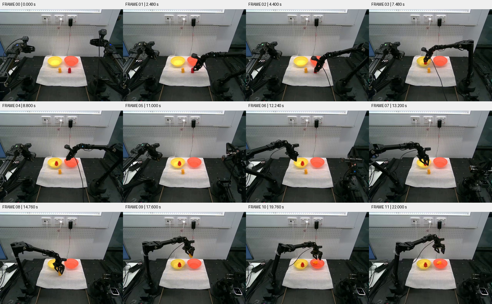
The right arm drops the yellow block onto the table instead of into the bowl.
原始响应与时间记录查看未经改写的输出
{
"decision": "failure_at_frame_08",
"reason": "The right arm drops the yellow block onto the table instead of into the bowl."
}12 · yellow_red_blocks_to_bowls成功
Use the right arm to place the yellow block into the yellow bowl on the left, then use the left arm to place the red block into the orange ball on the right. Success condition: All actions completed in order, and the yellow block is inside the yellow bowl and the red block is inside the orange ball.
aloha · ft-0060114870d98a885007 · 31.92s · cam_low
均匀抽帧 failure · 5.80s
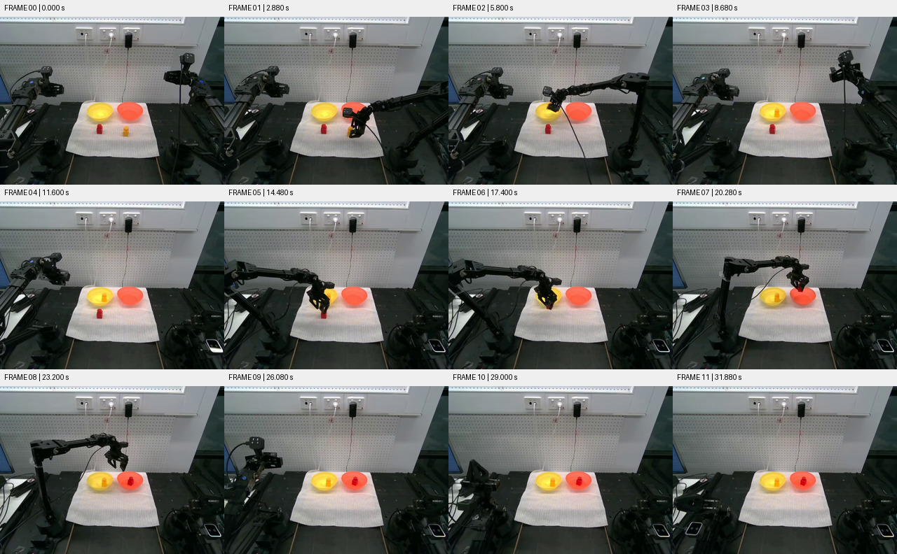
The right arm is holding the yellow block but has dropped it onto the table instead of placing it in the bowl.
原始响应与时间记录查看未经改写的输出
{
"decision": "failure_at_frame_02",
"reason": "The right arm is holding the yellow block but has dropped it onto the table instead of placing it in the bowl."
}状态事件抽帧 failure · 6.36s
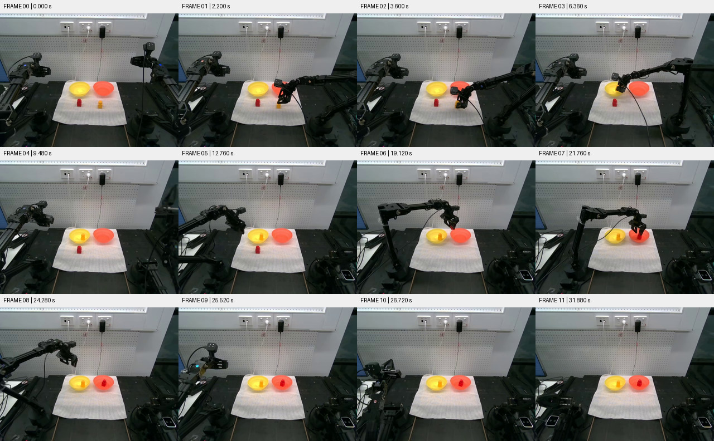
The right arm drops the yellow block onto the table instead of into the bowl.
原始响应与时间记录查看未经改写的输出
{
"decision": "failure_at_frame_03",
"reason": "The right arm drops the yellow block onto the table instead of into the bowl."
}13 · empty_bowl_insert_block失败 · 作者起点 55.00s
Use the right arm to pick up all blocks from the bowl and place them on the table. Then use the left arm to assemble the small block into the second slot from the right of the 4 slot block. Success condition: All actions completed in order, and the small block is properly assembled into the second slot from the right of the 4 slot block.
aloha · ft-30ed92dcf91893b28406 · 70.92s · cam_low
均匀抽帧 failure · 19.32s
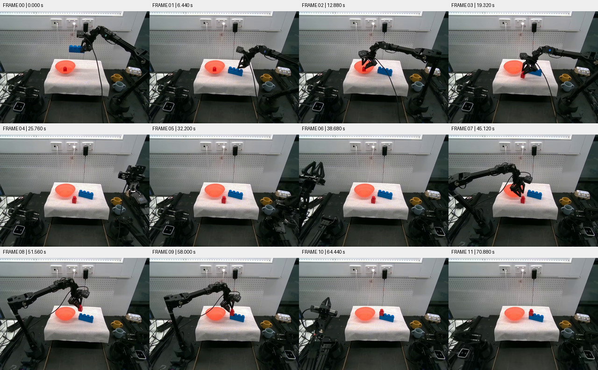
The right arm drops a red block onto the table instead of placing it in the bowl.
原始响应与时间记录查看未经改写的输出
{
"decision": "failure_at_frame_03",
"reason": "The right arm drops a red block onto the table instead of placing it in the bowl."
}状态事件抽帧 failure · 47.60s
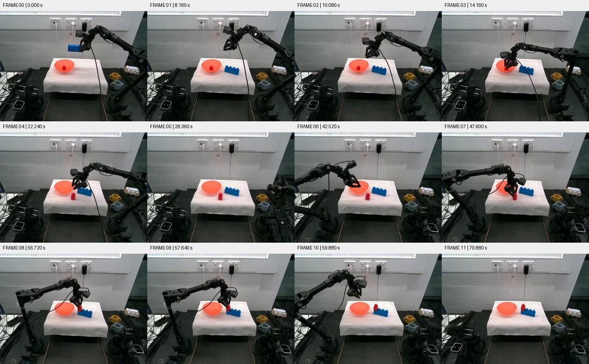
The right arm drops the red block onto the blue block instead of placing it on the table.
原始响应与时间记录查看未经改写的输出
{
"decision": "failure_at_frame_07",
"reason": "The right arm drops the red block onto the blue block instead of placing it on the table."
}14 · empty_bowl_insert_block成功
Use the right arm to pick up all blocks from the bowl and place them on the table. Then use the left arm to assemble the small block into the second slot from the right of the 4 slot block. Success condition: All actions completed in order, and the small block is properly assembled into the second slot from the right of the 4 slot block.
aloha · ft-6d1cbf0198eedcc4e104 · 85.04s · cam_low
均匀抽帧 failure · 30.92s
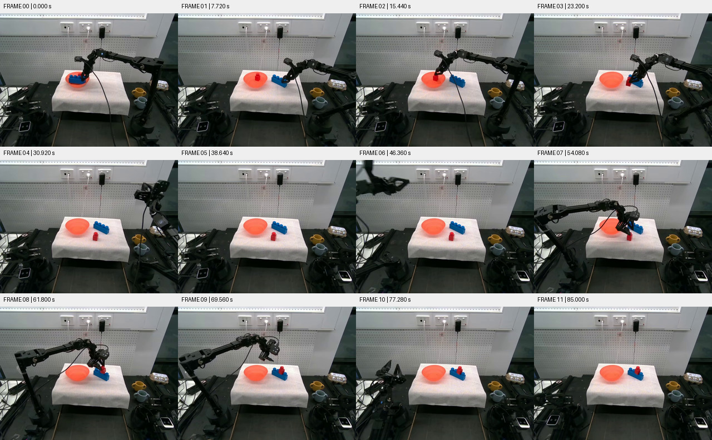
The right arm drops the block onto the table instead of placing it in the correct slot.
原始响应与时间记录查看未经改写的输出
{
"decision": "failure_at_frame_04",
"reason": "The right arm drops the block onto the table instead of placing it in the correct slot."
}状态事件抽帧 failure · 29.12s
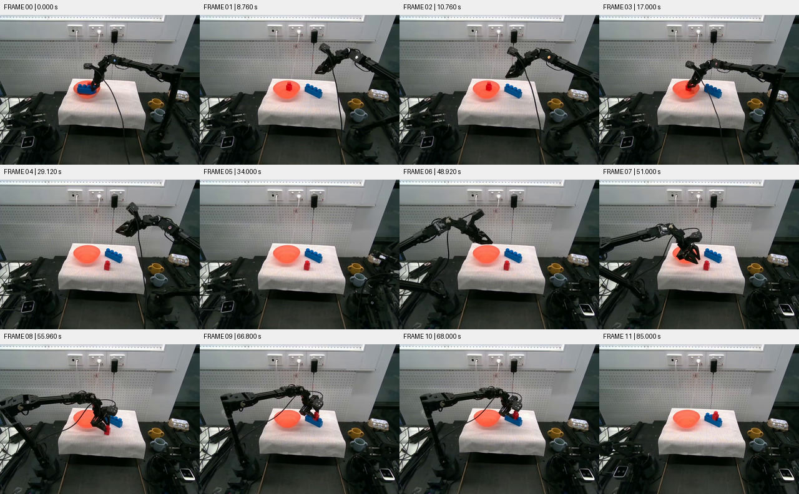
The right arm drops the block onto the table instead of placing it in the bowl.
原始响应与时间记录查看未经改写的输出
{
"decision": "failure_at_frame_04",
"reason": "The right arm drops the block onto the table instead of placing it in the bowl."
}15 · balls_to_egg_carton失败 · 作者起点 47.59s
Place all balls into the six slots egg carton: Use the right arm to place the three balls on the right side of the workspace, and use the left arm to place the balls on the left side of the workspace. Success condition: All actions completed in order, and all six balls are in the six slots of the egg carton.
aloha · ft-82f1c41e671d5091c6d5 · 54.40s · cam_low
均匀抽帧 failure · 19.76s
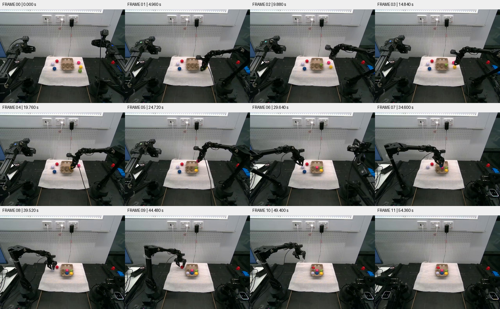
The right arm drops a ball onto the table instead of placing it into the egg carton slot.
原始响应与时间记录查看未经改写的输出
{
"decision": "failure_at_frame_04",
"reason": "The right arm drops a ball onto the table instead of placing it into the egg carton slot."
}状态事件抽帧 failure · 48.72s
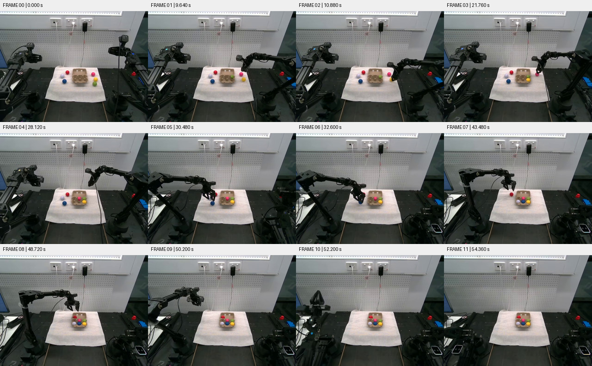
Frame 08 shows the left arm dropping a ball onto the table instead of placing it in the carton.
原始响应与时间记录查看未经改写的输出
{
"decision": "failure_at_frame_08",
"reason": "Frame 08 shows the left arm dropping a ball onto the table instead of placing it in the carton."
}16 · balls_to_egg_carton成功
Place all balls into the six slots egg carton: Use the right arm to place the three balls on the right side of the workspace, and use the left arm to place the balls on the left side of the workspace. Success condition: All actions completed in order, and all six balls are in the six slots of the egg carton.
aloha · ft-a653361a22949043025c · 78.56s · cam_low
均匀抽帧 failure · 57.12s
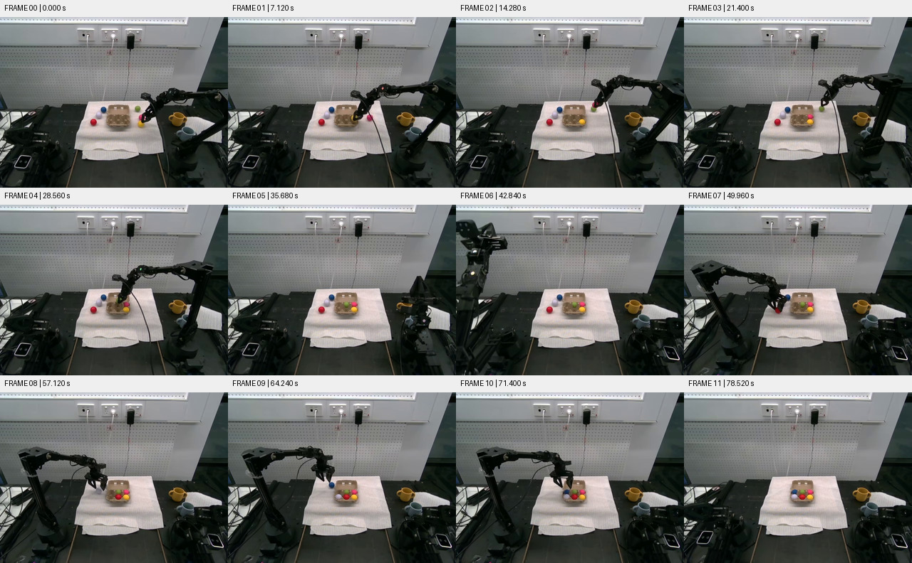
Frame 08 shows the left arm dropping a ball onto the table instead of placing it into the carton slot.
原始响应与时间记录查看未经改写的输出
{
"decision": "failure_at_frame_08",
"reason": "Frame 08 shows the left arm dropping a ball onto the table instead of placing it into the carton slot."
}状态事件抽帧 failure · 47.12s
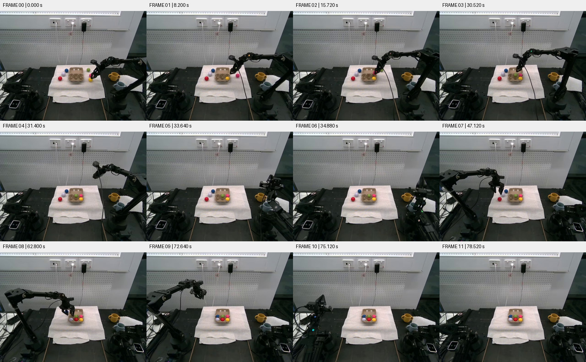
The right arm drops a ball onto the table instead of placing it into the egg carton slot.
原始响应与时间记录查看未经改写的输出
{
"decision": "failure_at_frame_07",
"reason": "The right arm drops a ball onto the table instead of placing it into the egg carton slot."
}